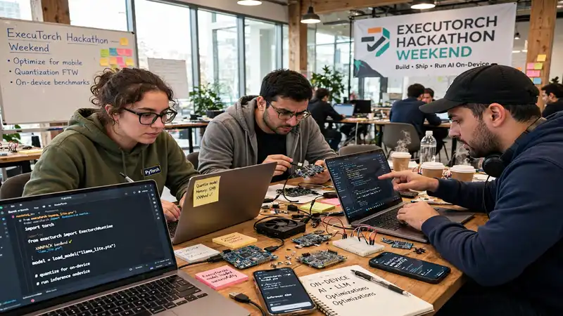
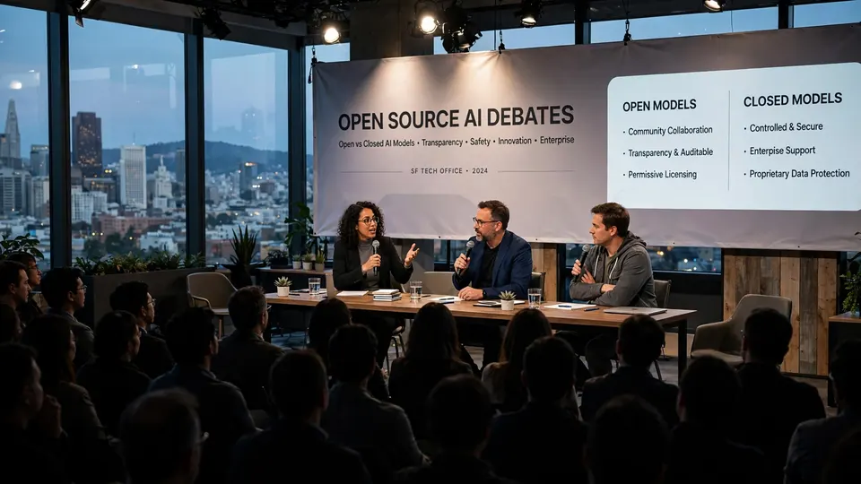

Open Source AI Week kicks off: 65 events over 10 days as the Bay Area bets on open AI
- Who: the Open Intelligence Foundation, a new community-led, vendor-neutral nonprofit dedicated to open-source AI, open models, and open science; Executive Director Matt White.
- What: Open Source AI Week — a 10-day, decentralized, community-run celebration of open-source AI, running October 16–25, 2026 across the San Francisco Bay Area.
- Scale: more than 60 community-led events hosted by 200+ participating organizations, from startups and research labs to nonprofits and local meetups.
- Four flagships: “Open Together” kickoff party (Oct. 16, The Midway, presented by Hugging Face); ExecuTorch Hackathon (Oct. 17–18, Founders Inc); Open Source AI Debates (Oct. 19, GitHub SF); Open Source AI Awards (Oct. 23, Founders Inc).
- Sponsors: platinum sponsor Google DeepMind; gold sponsors Arcee and Microsoft Azure; bronze sponsors NEAR AI and SemiAnalysis; community supporters include a16z, Meta, Mistral AI, NVIDIA (via community events), and UC Berkeley.
- Where to go: full calendar and RSVP links at luma.com/opensourceaiweek; more information at opensourceaiweek.com.
Not one conference, but sixty
Open Source AI Week begins today across the San Francisco Bay Area: ten days of independently hosted events, running October 16–25, built around a single idea — that AI should be open, accessible, and built by everyone. Stewarding the whole thing is the Open Intelligence Foundation, a new community-led, vendor-neutral nonprofit dedicated to open-source AI, open models, and open science.
More than 60 events hosted by over 200 participating organizations — startups, research labs, nonprofits, and local meetups — are on the calendar, according to the Foundation. The format is deliberately decentralized: any group with an open-source connection can host an event, and four flagship events organized by the Foundation anchor the week.
The four flagships
The week opens tonight at 6 p.m. with “Open Together: AI Builders Unite,” a kickoff party at The Midway in San Francisco presented by Hugging Face and co-hosted by the Foundation, with sponsors Arcee AI and Reflection AI. Hugging Face VP of Product Jeff Boudier framed the kickoff as a show of strength: the AI revolution, he said, will not be centralized.
This weekend brings the ExecuTorch Hackathon (Oct. 17–18, Founders Inc), presented by HackerSquad and focused on open models, local inference, and on-device AI, closing with a Sunday demo night. Sponsors include Meta, Qualcomm, and GitHub. On Monday, Oct. 19, GitHub’s San Francisco office hosts the Open Source AI Debates — Ion Stoica, Percy Liang, Malo Bourgon, Ben Brooks, Cheryl Cheng, and David Bellamy arguing the safety, policy, economic, and performance trade-offs of open versus closed models, backed by Google DeepMind, Microsoft Azure, Arcee AI, SemiAnalysis, and the NEAR Foundation. The week’s flagship close comes Oct. 23 with the Open Source AI Awards at Founders Inc, honoring the projects and people advancing open-source AI.

The community fills the rest
Most of the week is community-run, clustering around the PyTorch Conference (Oct. 20–21) and AGNTCon + MCPCon (Oct. 22–23) in San Jose. Highlights include the Recursive Agents Hackathon on Oct. 17 (Cerebral Valley and Crusoe with NVIDIA, $25,000 in prizes), an Arm + Meta ExecuTorch edge-AI challenge, a Google Gemma hardware hackathon at AGI House on Oct. 24, and Mem-Off, a side-by-side showdown of open-source AI memory systems.
Learning and networking events fill the gaps: the Open Source AI Debates’ policy happy hour, an SGLang and LinkedIn serving-framework meetup, an OpenClaw Foundation evening on AI you can own and control, and AI Safety Night SF returning after drawing 150+ people to its debut.

Why it matters
Timing is the story here. The week opens the same day Meta’s 816-billion-parameter open-weight Muse Spark Open ships for Mac Studios — the loudest signal yet that open-weight models are competing at the frontier. Open Source AI Week is the community’s answer to that moment: thousands of builders in one region, all working in the open, with a new nonprofit steward trying to make the ecosystem something people choose on purpose rather than fall into by default.
Events require registration; the full calendar and RSVP links are at opensourceaiweek.com and luma.com/opensourceaiweek. More about the steward at openintelligence.foundation.
Frequently asked questions
What is Open Source AI Week?
Open Source AI Week is a 10-day, community-run, decentralized celebration of open-source artificial intelligence across the San Francisco Bay Area, running October 16–25, 2026. It is not a single conference: more than 60 events hosted by 200+ organizations are on the calendar, anchored by four flagship events organized by the Open Intelligence Foundation.
Who is the Open Intelligence Foundation?
The Open Intelligence Foundation is a new community-led, vendor-neutral nonprofit dedicated to protecting and advancing open-source AI, open models, and open science. Led by Executive Director Matt White, it supports open-source projects and connects researchers, developers, founders, and communities — and it is the steward of Open Source AI Week.
What are the flagship events?
Four: the “Open Together” kickoff party on Oct. 16 at The Midway (presented by Hugging Face); the ExecuTorch Hackathon Oct. 17–18 at Founders Inc (presented by HackerSquad, on open models and on-device AI); the Open Source AI Debates on Oct. 19 at GitHub SF (open versus closed models); and the Open Source AI Awards on Oct. 23 at Founders Inc.